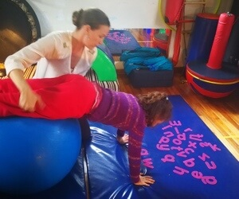
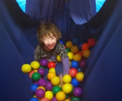
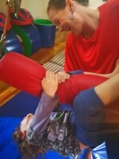
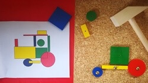
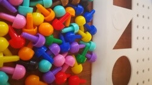

Unlocking your child's potential
We are an independent private practice located in Pinetown, Durban, South Africa.
We specialise in assessing and treating problems that can affect children at home, at school or with friends.
Our therapy is fun and we encourage family participation.
Our specialised input enables children to discover their strengths, to overcome their difficulties and so unlock their true potential.
We offer free telephone consultations
During this 15 minute conversation you can share concerns regarding your child with the therapist to explore options.


